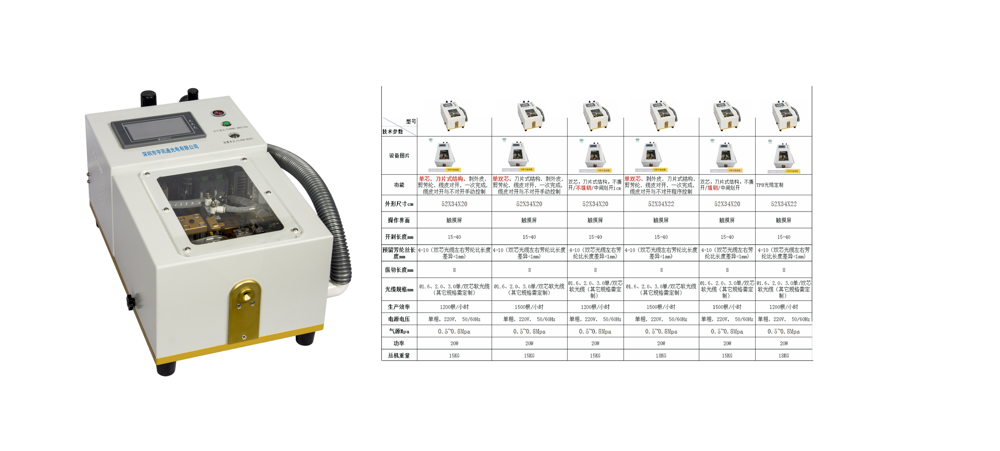
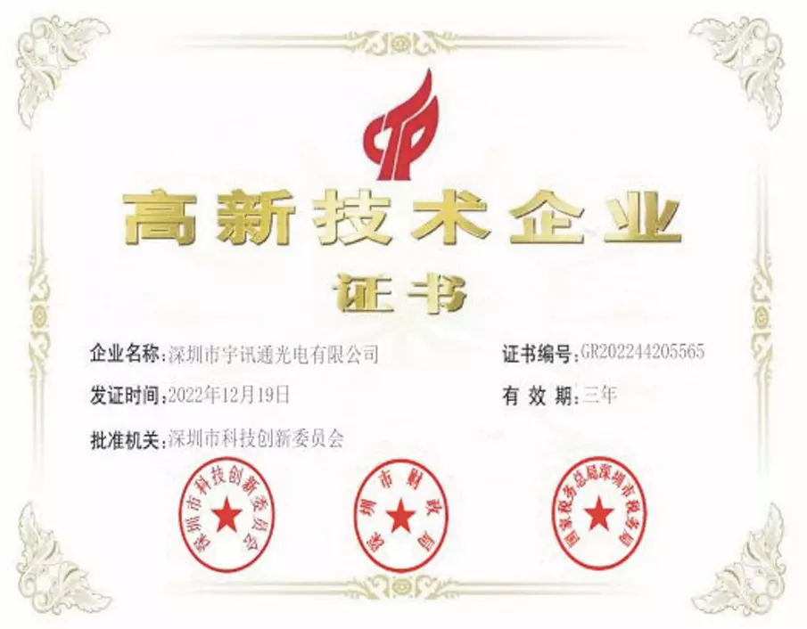
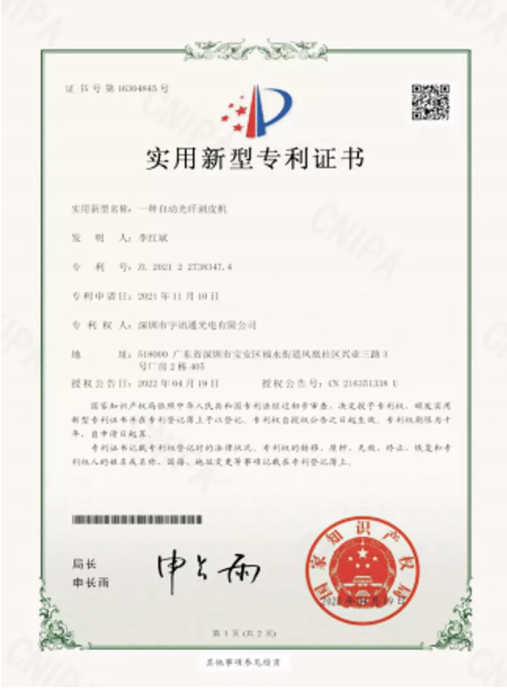
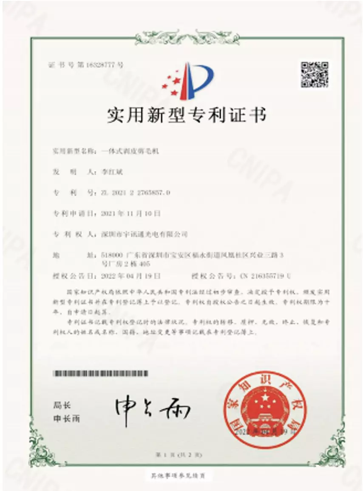
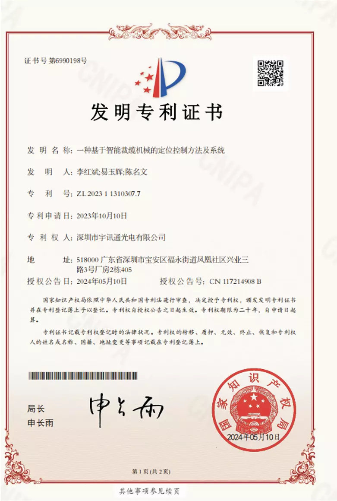

热门产品
提供光纤研磨、组装、检测设备及光通信器件全系列产品


YXT-MPODJ-02 MT 插芯全自动点胶机
本设备主要适用MT插芯产品点胶工艺,也可用来检测点胶外观用,设备系统全部采用PLC控制,编程简单,即学即用
产能：550-650个/小时
优势：1200万像素放大镜

全自动绕线挂线裁缆机
绕扎挂自动化一体机，支持美纹纸或扎丝捆扎自动切换，带喷码功能，适用于2.0/3.0单双芯光缆
生产效率：700pcs/H(3米线)
裁线长度：3m-50m
裁线精度：±5mm

单双芯剥皮剪毛机
全自动剥皮剪毛机，独立设计，符合人体工程学，实现剥缆、剪芳纶、纵切一次完成，双工作模式可选
双工作模式，可根据生产需求选择
生产效率高（1500根/小时左右），无需熟练人员
剥外皮长度可调，刀片更换简单方便
废料专用袋收集，保障生产场地整洁

MPO线序测试仪
设备型号：YXT-XXCSY-01，用于迷你缆/带状缆/900u/250u/4芯、8芯、12芯、16芯 24芯系列产品线序测试
线序检测，支持多色线、相近色
软件调节灯光亮度，包括顶灯、辅助灯、底灯
图像10倍放大
支持多个胶壳同时检测
支持多个胶壳按顺序检测
支持合格数量提示
支持报表统计，可以导出报表、查看报表、清空报表

YXT-RSJ-01热缩管收缩机
用于热缩套管的烘烤收缩，取代传统手持式热封枪，可配合车间流水作业，温度和时间可调，热缩效果美观无气泡
一次热缩LC产品24根或12根
热缩时间：20-30秒
公司详细介绍及证书展示
深入了解深圳市宇讯通光电有限公司的发展历程、企业文化以及所获得的重要证书。
公司详细信息
深圳市宇讯通光电有限公司，多年来一直专注于光通信器件及设备的研发、生产和销售。公司拥有一支高素质的专业技术团队，始终坚持以创新为驱动，不断投入研发资源，在光纤研磨机、研磨夹具、光电自动化设备等领域取得了显著的技术突破，研发技术处于国内领先水平。 作为国家高新技术企业和创新型中小企业，公司获得了30多项发明及实用新型专利，这不仅是对公司技术实力的高度认可，也为公司的持续发展提供了坚实的技术保障。公司的产品覆盖全国及欧美、印度、东南亚等地区，凭借卓越的品质和良好的服务，赢得了客户的广泛赞誉。 在企业文化方面，宇讯通光电秉持“诚信、创新、合作、共赢”的价值观，致力于为客户提供高品质的光纤通信产品和解决方案。公司注重人才培养和团队建设，营造了积极向上、团结协作的工作氛围，为员工提供了广阔的发展空间。
证书展示

高新技术企业证书

实用新型专利证书

实用新型专利证书

发明专利